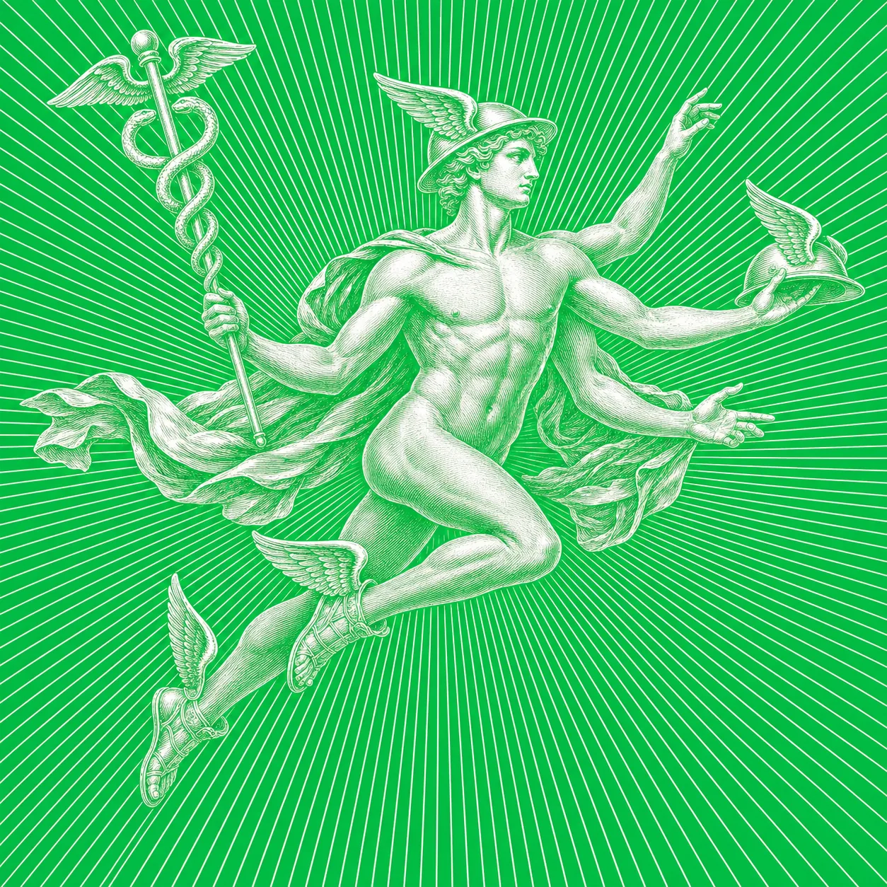
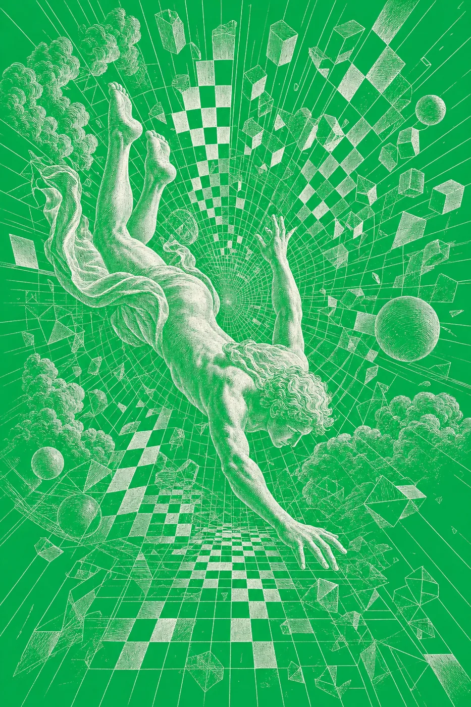
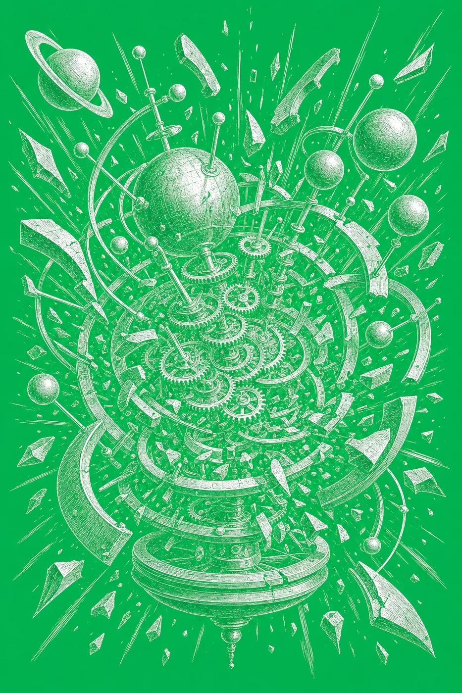
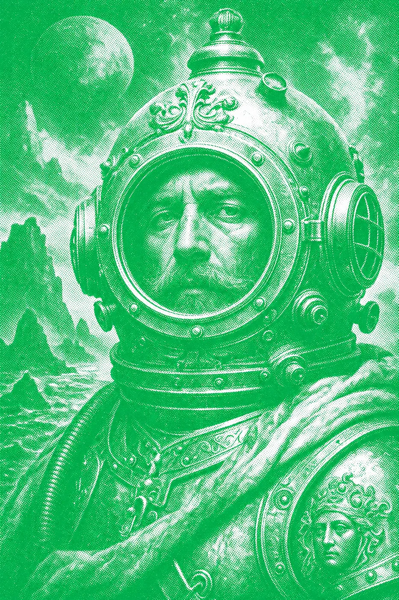

A trading floor for your company's compute. Every query is priced, deduped, ranked by value-per-token, and settled against a hard budget — before it runs.
Install on your Hermes — one line, no forkcurl -fsSL https://bursar-hermes.com/install.sh | bash

Average annual spend, 2024 → 2026. Token consumption is up 13× since Jan 2025 — and the alerts still fire after the money's gone.
Of production queries are near-duplicates — frontier prices paid to answer the same question five different ways. Research puts 50–90% of inference spend as waste.
Spend cut on a 400-query tick — $41.13 settled versus $281.07 naïve — every dollar reconciling bill = ledger = Stripe, to the cent.
Every query is costed at real, sourced market rates — pulled live from Hermes's own pricing snapshot. 28 models, a 528× price spread, no fantasy numbers.
Ask it again and Bursar reuses the earlier work — handing the agent the prior answer as context for one cheap call instead of redoing the whole lookup. It re-verifies the files that answer touched by hash at zero tokens, so reuse stays current and never stale. The 31% never gets paid for twice.

The dispatcher fills the budget highest value-per-token first — a knapsack market, like a trading desk allocating scarce capital. Best queries clear first.

Per-team tranches with caps that hold before the call is made. A tranche can never be overspent. The overrun doesn't happen — it can't.

Trivia goes to nano; high-stakes goes to the frontier. Bursar routes to the cheapest model that meets the value tier's bar — killing the "best model for everything" tax.
Every serviced query meters a Stripe trading fee — the metering rail and the throttle. A query whose worth can't clear its cost plus fee is priced out.
Bursar isn't just a simulator. A native Hermes agent plugin sits in the LLM execution path of your real chats, subagents, and tool calls — observing, pricing, deduping, and down-routing live. Arm it with a single shield toggle.
One job per rail. NVIDIA's Nemotron values and routes on-prem — your prompts never leave your walls. Stripe settles the ledger. Hermes orchestrates. Bursar is the market between them.
View on GitHub →